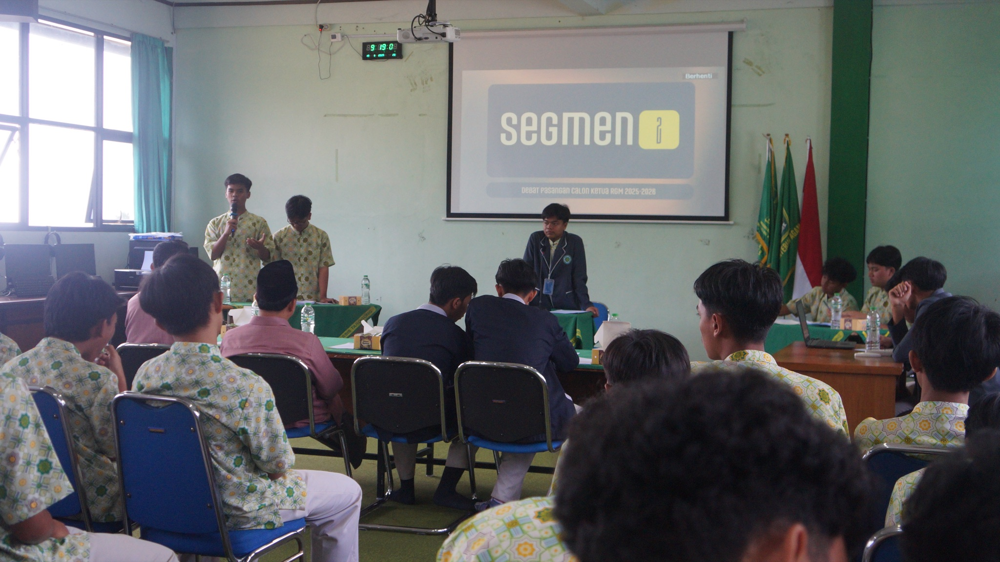
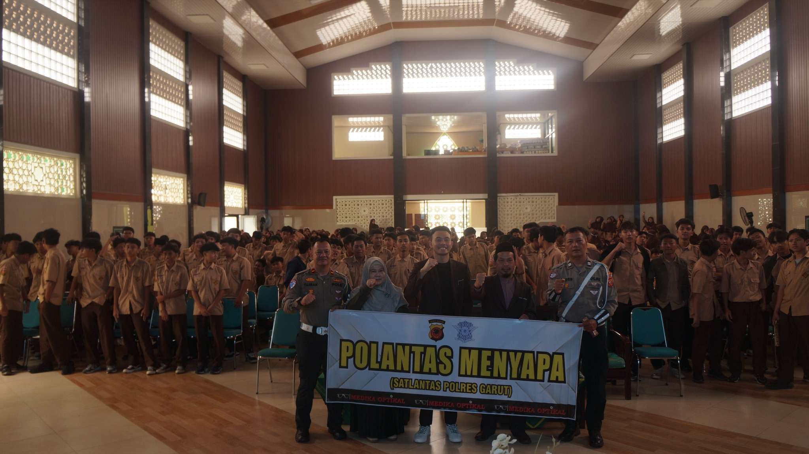

Sumber Berita: Konten berita bersumber dari email resmi organisasi rgmln76@gmail.com.
 📌 Terbaru
01 Oktober 2025
📌 Terbaru
01 Oktober 2025
Pelantikan Kepengurusan RGM Periode 2025–2026 Resmi Dilaksanakan
Pelantikan kepengurusan baru Rijaalul Ghad Mu'allimin (RGM) MA Persis 76 Tarogong periode 2025–2026 telah resmi dilaksanakan. Seluruh pengurus baru siap mengemban amanah.
Baca Selengkapnya
PemilihanDebat Paslon Ketua RGM: Adu Gagasan untuk Masa Depan Organisasi
Calon-calon ketua RGM beradu visi dan gagasan dalam sesi debat terbuka yang disaksikan seluruh santri.
 Olahraga
OlahragaRGM League 2026 Resmi Dibuka, Antusias Santri Membludak
Program tahunan RGM League kembali hadir dengan format baru, diikuti lebih dari 20 tim.
 Seminar
SeminarSeminar Sigma RGM: Membangun Pola Pikir Santri yang Visioner
Seminar menghadirkan narasumber inspiratif untuk membentuk pola pikir santri yang visioner.
 Organisasi
OrganisasiMusyawarah Kerja RGM 2026: Menyusun Program Unggulan Setahun ke Depan
Seluruh pengurus merancang program-program unggulan yang akan dilaksanakan sepanjang tahun 2026.

SeminarSeminar Keselamatan Berkendara: RGM Peduli Keselamatan Santri
RGM menggelar seminar keselamatan berkendara untuk meningkatkan kesadaran tertib berlalu lintas.
 Olahraga
OlahragaRGM Running: Santri Sehat, Semangat Berprestasi Semakin Kuat
Kegiatan lari bersama digelar sebagai bentuk komitmen menjaga kesehatan para santri.